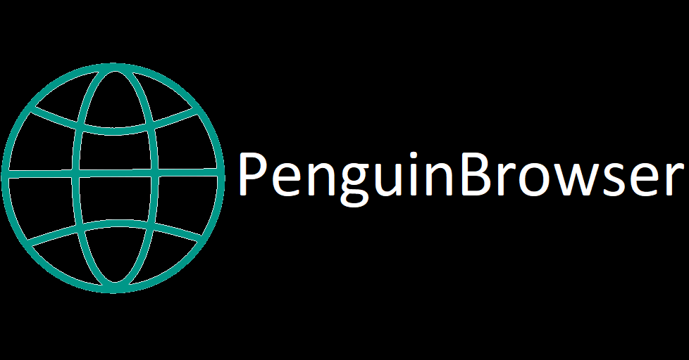

Features:
- Very fast
- Very small application size (<1 MB)
- Uses Androids WebView
- Ultra Privacy Mode (disables JavaScirpt and prevents Websites from reading device information)
- Simpilified useragent which excludes device information
- OneHandedMode
Credits:
Copyright © 2020-2021 Pinguin2001